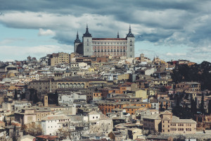
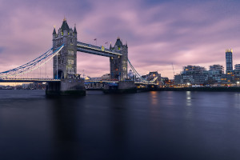
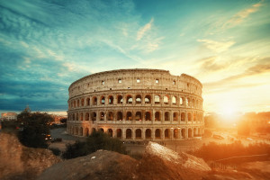
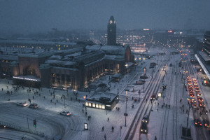
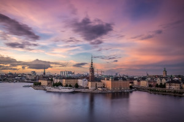

Madrid

Située au centre de l'Espagne, Madrid, sa capitale, est une ville dotée d'élégants boulevards et de vastes parcs très bien entretenus comme le Retiro. Elle est réputée pour ses riches collections d'œuvres d'art européennes, avec notamment celles du musée du Prado, réalisées par Goya, Velázquez et d'autres maîtres espagnols. Au cœur de la vieille Madrid des Habsbourgs se trouve la Plaza Mayor, bordée de portiques, et, à proximité, le Palais royal baroque et son Armurerie, qui comporte des armes historiques
Réservez votre vol
Londres
Londres, la capitale de l'Angleterre et du Royaume-Uni, est une ville moderne dont l'histoire remonte à l'époque romaine. En son centre se dressent l'imposant Parlement, l'emblématique Big Ben et l'abbaye de Westminster, lieu de couronnement des monarques britanniques. De l'autre côté de la Tamise, le London Eye, la grande roue, offre une vue panoramique sur le South Bank Center, et toute la ville.
Réservez votre vol

Oslo

Depuis Oslo, partez au volant de votre voiture de location au cœur de la région des fjords norvégiens ; ici les montagnes côtoient les larges plateaux et cimes magnifiques offrent des vues spectaculaires
Réservez votre vol
Rome
Capitale de l'Italie, Rome est une grande ville cosmopolite dont l'art, l'architecture et la culture de presque 3 000 ans rayonnent dans le monde entier. Ses ruines telles que celles du Forum Romain et du Colisée évoquent la puissance de l'ancien Empire romain. Siège de l'Église catholique romaine, la Cité du Vatican compte la basilique Saint-Pierre et les musées du Vatican où se trouvent des chefs-d'œuvre tels que la fresque de la chapelle Sixtine, peinte par Michel-Ange.
Réservez votre vol

Helsinki

Au sud de la Finlande, la capitale Helsinki occupe une péninsule du golfe de Finlande. Son avenue centrale, Mannerheimintie, regroupe différentes institutions parmi lesquelles le musée national qui retrace l'histoire du pays, de l'âge de pierre à nos jours. Elle compte également l'imposant Parlement et le musée d'Art contemporain Kiasma. Toute de briques rouges, richement décorée, la cathédrale Ouspenski surplombe le port.
Réservez votre vol
Stockholm
Stockholm, la capitale de la Suède, est située sur un vaste archipel de la mer Baltique, comprenant 14 îles et plus de 50 ponts. Les rues pavées et les bâtiments de couleur ocre de Gamla stan (la vieille ville) abritent la cathédrale de Storkyrkan du XIIIe siècle, le palais royal de Stockholm et le musée Nobel, consacré au prix Nobel. Des ferries et des bateaux de tourisme transportent les passagers entre les îles.
Réservez votre vol
